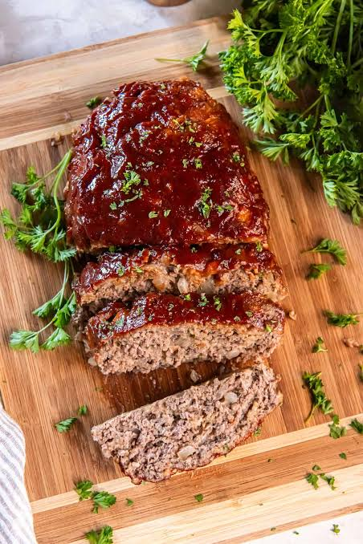

Home Page
Recipe List
Meatloaf Recipe

Description
Everyone loves meatloaf, and this recipe is sure to remind
you of the reason why you do as well. Best paired with side
dishes like mashed potatoes and asparagus.
Ingredients List
- Lean Ground Beef
- Onions and Garlic
- Breadcrumbs and Eggs
- Ketchup
- Milk
- Seasonings
- Glaze: Ketchup, White Vinegar, Brown Sugar, Garlic
powder, onion powder
Recipe Steps
- Place foil on baking sheet and preheat oven to 350 F.
- Sautee Onions in oil over med heat for 5-7 mins
- Add all meatloaf ingredients and mix in a large bowl
- Add meat mixuture to pan and shape into meatloaf. Bake uncovered at 350 F for 40 mins
- Mix glaze ingredients together in a small bowl
- Spread glaze over loaf, return to oven for another 20 mins. Rest meatloaf for 10-15 mins before serving.